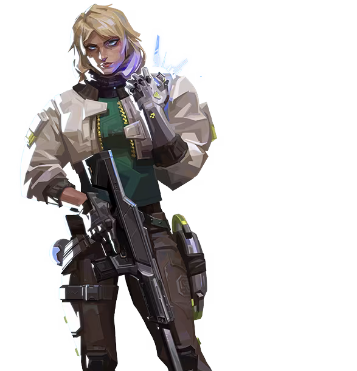

デッドロック

国籍: ノルウェー
ロール: センチネル
ノルウェー出身の工作員、デッドロックは最先端のナノワイヤー技術を駆使し、危険な襲撃の最中においても戦場の要所を確保する。その油断のない監視、そして不屈の獰猛さから逃れられる者はいない。
公式トレーラー
スキル
| スキル名 | 値段 | 所持上限 | 説明 |
|---|---|---|---|
| ソニックセンサー (C) | 200 | 1個 | 範囲内の敵を強制的にしゃがみ状態にし、移動速度を低下させるグレネード。サイファーのカメラのように外すことは可能で、取り外すまでデバフが続く。ただし外す際に大きな音が出るので、居場所がバレてしまう。 |
| ソニックセンサー (Q) | 200 | 2個 | 範囲内で敵が足音、射撃音、リロード音、その他大きな音を出すと、検知して範囲内にスタンを発生させるセンサーを設置する。静かに移動すれば検知されないので、裏取り警戒には向かない。 |
| バリアメッシュ(E) | 無料 | 1個 | ディスクを中心に十字状に4つのバリアが発生する。バリアは通り抜けができないが、銃弾や投擲物を防ぐことはできない。身を守るバリアではなく、敵の行動を制限して有利に撃ち合うためのアビリティ。 |
| アナイアレーション(X) - アルティメット | - | 1個 | ナノワイヤーアクセラレーターを構える。「発射」でナノワイヤーを放ち、最初に命中した敵を捕らえる。コクーン化された敵はナノワイヤーを伝って手繰り寄せられ、解放されることなく端まで到達するとデスする。ナノワイヤのコクーンは破壊可能。 |
立ち回りとおすすめマップ
敵の進行を止める役割
攻めでも守りでも変わらず、デッドロックの役割は敵の進行を止めること。特にバリアメッシュは敵の時間を大きく消費できるので、ラッシュやリテイクのを止めることができる。
ウルトがあると少人数戦で強い
アルティメットのアナイアレーションは少人数戦で強力。特に1v1では最強クラスの性能なので、ウルトが使用できる状態なら生き残るだけでも敵に大きなプレッシャーをかけることができる。
注意点
スキルでのエリアコントロールがほかのセンチネルと違いできないため、2センチネル構成がおすすめ。ただ現実的に2センチは厳しいので、1人で広いエリアを抑える必要がないマップで採用することが多い。